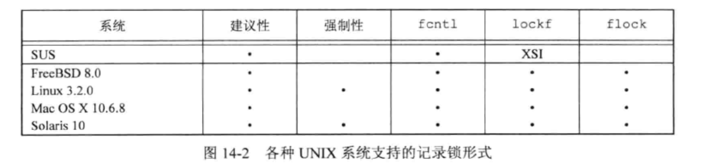
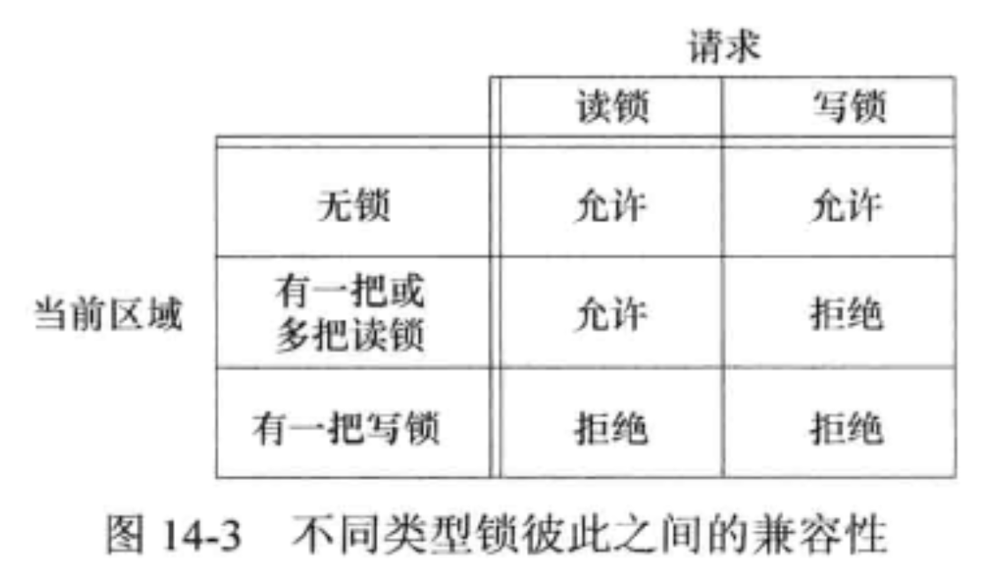
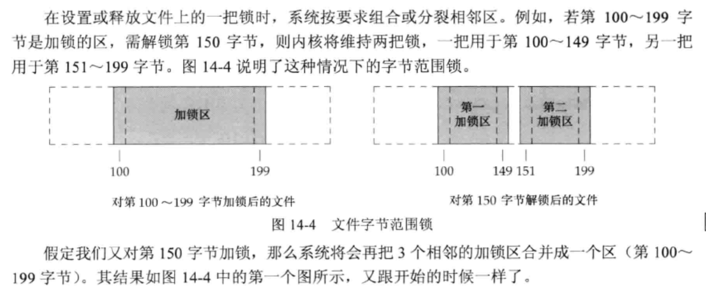
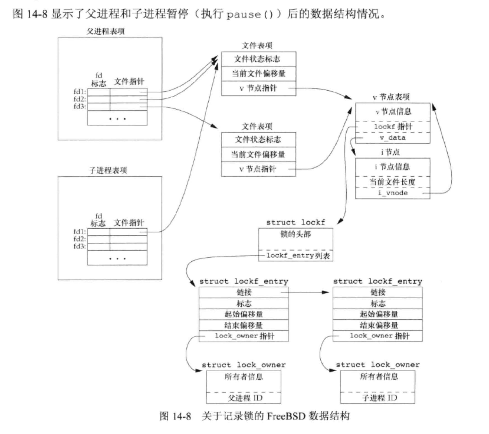

<!DOCTYPE html>
<html lang="en">

<head>
  <meta charset="utf-8" />
   
  <meta name="keywords" content="生活,旅行,思考,代码,博客" />
   
  <meta name="description" content="一座孤岛" />
  
  <meta name="viewport" content="width=device-width, initial-scale=1, maximum-scale=1" />
  <title>
    《UNIX环境高级编程》第十四章——高级I/O |  akaQin&#39;s Blog
  </title>
  <meta name="generator" content="hexo-theme-yilia-plus">
  
  <link rel="shortcut icon" href="/favicon.ico" />
  
  
<link rel="stylesheet" href="/css/style.css">

  
<script src="/js/pace.min.js"></script>


  

  

<link rel="alternate" href="/atom.xml" title="akaQin's Blog" type="application/atom+xml">
</head>

</html>

<body>
  <div id="app">
    <main class="content">
      <section class="outer">
  <article id="post-《UNIX环境高级编程》第十四章——高级I-O" class="article article-type-post" itemscope
  itemprop="blogPost" data-scroll-reveal>

  <div class="article-inner">
    
    <header class="article-header">
       
<h1 class="article-title sea-center" style="border-left:0" itemprop="name">
  《UNIX环境高级编程》第十四章——高级I/O
</h1>
  

    </header>
    

    
    <div class="article-meta">
      <a href="/2020/04/11/%E3%80%8AUNIX%E7%8E%AF%E5%A2%83%E9%AB%98%E7%BA%A7%E7%BC%96%E7%A8%8B%E3%80%8B%E7%AC%AC%E5%8D%81%E5%9B%9B%E7%AB%A0%E2%80%94%E2%80%94%E9%AB%98%E7%BA%A7I-O/" class="article-date">
  <time datetime="2020-04-11T06:01:11.000Z" itemprop="datePublished">2020-04-11</time>
</a>
      
  <div class="article-category">
    <a class="article-category-link" href="/categories/%E3%80%8AAPUE%E3%80%8B%E7%AC%94%E8%AE%B0/">《APUE》笔记</a>
  </div>

      
      
<div class="word_count">
    <span class="post-time">
        <span class="post-meta-item-icon">
            <i class="ri-quill-pen-line"></i>
            <span class="post-meta-item-text"> 字数统计:</span>
            <span class="post-count">1.4k字</span>
        </span>
    </span>

    <span class="post-time">
        &nbsp; | &nbsp;
        <span class="post-meta-item-icon">
            <i class="ri-book-open-line"></i>
            <span class="post-meta-item-text"> 阅读时长≈</span>
            <span class="post-count">5分钟</span>
        </span>
    </span>
</div>

      
    </div>
    

    
    
    <div class="tocbot"></div>


    

    
    <div class="article-entry" itemprop="articleBody">
      


      

      
      <h2 id="非阻塞I-O"><a href="#非阻塞I-O" class="headerlink" title="非阻塞I/O"></a>非阻塞I/O</h2><h3 id="”低速“系统调用"><a href="#”低速“系统调用" class="headerlink" title="”低速“系统调用"></a>”低速“系统调用</h3><p>系统调用分为两类：“低速”系统调用和其他。<br>低速系统调用是可能会使进程永远阻塞的一类系统调用，包括：</p>
<ul>
<li>如果某些文件类型（如读管道、终端设备和网络设备）的数据并不存在，读操作可能会使调用者永远阻塞；</li>
<li>如果数据不能被相同的文件类型立即接受（如管道中无空间、网络流控制），写操作可能会使调用者永远阻塞；</li>
<li>在某种条件发生之前打开某些文件类型可能会发生阻塞（如打开一个终端设备，需要先等待与之连接的调制解调器应答）</li>
<li>对已经加上强制性记录锁的文件进行读写；</li>
<li>某些ioctl操作；</li>
<li>某些进程间通信函数；</li>
</ul>
<p><em>虽然读写磁盘文件会暂时阻塞调用者，但并不能将与磁盘I/O有关的系统调用视为”低速“</em></p>
<h3 id="非阻塞I-O-1"><a href="#非阻塞I-O-1" class="headerlink" title="非阻塞I/O"></a>非阻塞I/O</h3><p>非阻塞I/O是我们可以发出 open、read 和 write 这样的I/O操作，并使这些操作不会永远阻塞。如果这种操作不能完成，则调用立即出错返回，表示该操作如继续执行将阻塞。<br>对于一个给定的描述符，有两种为其指定非阻塞I/O的方法：</p>
<ul>
<li>如果调用 open 获得描述符，可指定 O_NONBLOCK 标志。</li>
<li>对于已经打开的描述符，则可调用 fcntl 打开 O_NONBLOCK 文件状态标志。</li>
</ul>
<h2 id="记录锁"><a href="#记录锁" class="headerlink" title="记录锁"></a>记录锁</h2><p>记录锁的功能是：当第一个进程正在读或修改文件的某个部分时，使用记录锁可以阻止其他进程修改同一文件区。它锁定的只是文件中的一个区域（也可能是整个文件）。<br>记录锁在各种系统种有不同的形式，POSIX。1标准的基础是fcntl方法。<br></p>
<h3 id="fcntl-记录锁"><a href="#fcntl-记录锁" class="headerlink" title="fcntl 记录锁"></a>fcntl 记录锁</h3><figure class="highlight c"><table><tr><td class="gutter"><pre><span class="line">1</span><br><span class="line">2</span><br><span class="line">3</span><br><span class="line">4</span><br><span class="line">5</span><br><span class="line">6</span><br><span class="line">7</span><br><span class="line">8</span><br><span class="line">9</span><br></pre></td><td class="code"><pre><span class="line"><span class="function"><span class="keyword">int</span> <span class="title">fcntl</span><span class="params">(<span class="keyword">int</span> fd, <span class="keyword">int</span> cmd, ...<span class="comment">/* struct flock *flockptr */</span>)</span></span>;</span><br><span class="line"></span><br><span class="line"><span class="class"><span class="keyword">struct</span> <span class="title">flock</span> &#123;</span></span><br><span class="line">  short l_type;   /\* 锁类型，F_RDLOCK（共享读锁）、F_WRLCK（独占写锁）或 F_UNLCK （解锁一个区域） \*/</span><br><span class="line">  short l_whence; /\* 根源（从什么地方开始)：SEEK_SET、SEEK_CUR <span class="keyword">or</span> SEEK_END \*/</span><br><span class="line">  <span class="keyword">off_t</span> l_start;  /\* 和 l_whence 共同组成要加锁/解锁区域的其实字节偏移量 \*/</span><br><span class="line">  <span class="keyword">off_t</span> l_len;    /\* 加锁/解锁区域的字节长度 \*/</span><br><span class="line">  <span class="keyword">off_t</span> l_pid;    /\* 进程的ID（l_pid）持有的锁能阻塞当前进程（仅由 F_GETLK 返回） \*/</span><br><span class="line">&#125;;</span><br></pre></td></tr></table></figure>

<p>共享读锁（L_RDLCK）和独占性写锁（L_WRLCK）。任意多个进程在一个给定的字节上可以各自有一把共享的读锁，但是在一个给定字节上只能有一个进程有一把独占写锁。<br>进一步而言，如果在一个给定字节上已经有一把或多把读锁，则不能在该字节上再加写锁；如果一个字节上已经有一把独占写锁，则不能再对它加任何锁。<br>单个进程提出多个锁请求时，新锁将替换就锁。<br><br>加读锁时，描述符必须是读打开；加写锁时，描述符必须是写打开；<br><em>频繁的加读锁可能会把请求写锁的进程给饿死</em><br>锁会自动的分裂和组合：<br></p>
<h4 id="死锁"><a href="#死锁" class="headerlink" title="死锁"></a>死锁</h4><p>如果两个进程相互等待对方持有的锁并切不释放自己持有的锁时，这两个进程就进入了死锁的状态。</p>
<h3 id="锁的隐含继承和释放"><a href="#锁的隐含继承和释放" class="headerlink" title="锁的隐含继承和释放"></a>锁的隐含继承和释放</h3><ul>
<li>锁与进程和文件两者想关联：<ol>
<li>当一个进程终止时，它所建立的锁全部释放；</li>
<li>无论一个描述符合适关闭，该进程通过这一描述符引用的文件上的任何一把锁都会释放。</li>
</ol>
</li>
<li>由 fork 产生的子进程不继承父进程所设置的锁。因为锁的作用是阻止多个进程同时写同一个文件。</li>
<li>在执行 exec 后，新程序可以继承原执行程序的锁。</li>
</ul>
<h3 id="FreeBSD-实现"><a href="#FreeBSD-实现" class="headerlink" title="FreeBSD 实现"></a>FreeBSD 实现</h3><figure class="highlight c"><table><tr><td class="gutter"><pre><span class="line">1</span><br><span class="line">2</span><br><span class="line">3</span><br><span class="line">4</span><br><span class="line">5</span><br><span class="line">6</span><br><span class="line">7</span><br><span class="line">8</span><br></pre></td><td class="code"><pre><span class="line">fd1 = <span class="built_in">open</span>(pathname, ...);</span><br><span class="line">write_lock(fd1, <span class="number">0</span>, SEEK_SET, <span class="number">1</span>);  <span class="comment">/* parent write locks byte 0 */</span></span><br><span class="line"><span class="keyword">if</span> ((pid = fork()) &gt; <span class="number">0</span>) &#123;</span><br><span class="line">  fd2 = dump(fd1);</span><br><span class="line">  fd3 = <span class="built_in">open</span>(pathname, ...);</span><br><span class="line">&#125; <span class="keyword">else</span> <span class="keyword">if</span> (pid == <span class="number">0</span>) &#123;</span><br><span class="line">  read_lock(fd1, <span class="number">1</span>, SEEK_SET, <span class="number">1</span>);  <span class="comment">/* child read locks byte 1 * /</span></span><br><span class="line"><span class="comment">&#125;</span></span><br></pre></td></tr></table></figure>
<p><br><em>锁结构的指针放在了v节点（Linux里是i通用节点）结构里。</em><br>在父进程中，关闭 fd1、fd2 或 fd3 中的任意一个都将释放由父进程设置的写锁。在关闭这三个中的任意一个h时，内核会从该描述符锁关联的i节点开始，逐个检查 lockf 链接表中的各项，并释放由调用进程持有的各把锁。内核并不清楚（也不关心）父进程是用这三个中的哪个描述符来设置这把锁的。</p>
<h3 id="建议锁和强制锁"><a href="#建议锁和强制锁" class="headerlink" title="建议锁和强制锁"></a>建议锁和强制锁</h3><p>考虑数据库访问例程库。如果该库中所有函数都以一致的方法处理记录锁，则称使用这些函数访问数据库的进程集为<code>合作进程（cooperating process）</code>。如果这些函数是唯一地用来访问数据库的函数，那么它们使用建议锁是可行的。但建议锁不能阻止对数据库文件有写权限的任何其他进程写这个数据库文件。不实用数据库访问例程库协同一致的方法来访问数据库的进程是非合作进程。<br>强制锁会让内核检查每一个 open、read 和 write，验证调用进程是否违背了正在访问的文件上的一把锁。强制性锁也被成为强迫方式锁。</p>
<h4 id="当两个人同时编辑同一个文件时会怎样？"><a href="#当两个人同时编辑同一个文件时会怎样？" class="headerlink" title="当两个人同时编辑同一个文件时会怎样？"></a>当两个人同时编辑同一个文件时会怎样？</h4><p><em>一般的UNIX系统文本编辑器并不适用记录锁，所以该文件的最后结果取决于写该文件的最后一个进程。</em></p>

      
      <!-- reward -->
      
      <div id="reward-btn">
        打赏
      </div>
      
    </div>
    

      <!-- copyright -->
      
        <div class="declare">
          <ul class="post-copyright">
            <li>
              <i class="ri-copyright-line"></i>
              <strong>版权声明： </strong s>
              本博客所有文章除特别声明外，均采用 <a href="https://www.apache.org/licenses/LICENSE-2.0.html" rel="external nofollow"
                target="_blank">Apache License 2.0</a> 许可协议。转载请注明出处！
            </li>
          </ul>
        </div>
        
    <footer class="article-footer">
      
          
<div class="share-btn">
      <span class="share-sns share-outer">
        <i class="ri-share-forward-line"></i>
        分享
      </span>
      <div class="share-wrap">
        <i class="arrow"></i>
        <div class="share-icons">
          
          <a class="weibo share-sns" href="javascript:;" data-type="weibo">
            <i class="ri-weibo-fill"></i>
          </a>
          <a class="weixin share-sns wxFab" href="javascript:;" data-type="weixin">
            <i class="ri-wechat-fill"></i>
          </a>
          <a class="qq share-sns" href="javascript:;" data-type="qq">
            <i class="ri-qq-fill"></i>
          </a>
          <a class="douban share-sns" href="javascript:;" data-type="douban">
            <i class="ri-douban-line"></i>
          </a>
          <!-- <a class="qzone share-sns" href="javascript:;" data-type="qzone">
            <i class="icon icon-qzone"></i>
          </a> -->
          
          <a class="facebook share-sns" href="javascript:;" data-type="facebook">
            <i class="ri-facebook-circle-fill"></i>
          </a>
          <a class="twitter share-sns" href="javascript:;" data-type="twitter">
            <i class="ri-twitter-fill"></i>
          </a>
          <a class="google share-sns" href="javascript:;" data-type="google">
            <i class="ri-google-fill"></i>
          </a>
        </div>
      </div>
</div>

<div class="wx-share-modal">
    <a class="modal-close" href="javascript:;"><i class="ri-close-circle-line"></i></a>
    <p>扫一扫，分享到微信</p>
    <div class="wx-qrcode">
      
    </div>
</div>

<div id="share-mask"></div>
      
      
  <ul class="article-tag-list" itemprop="keywords"><li class="article-tag-list-item"><a class="article-tag-list-link" href="/tags/I-O/" rel="tag">I/O</a></li></ul>


    </footer>

  </div>

  
  
  <nav class="article-nav">
    
    
      <a href="/2020/04/10/%E3%80%8AUNIX%E7%8E%AF%E5%A2%83%E9%AB%98%E7%BA%A7%E7%BC%96%E7%A8%8B%E3%80%8B%E7%AC%AC%E4%B8%89%E7%AB%A0%E2%80%94%E2%80%94%E6%96%87%E4%BB%B6I-O/" class="article-nav-link">
        <strong class="article-nav-caption">下一篇</strong>
        <div class="article-nav-title">《UNIX环境高级编程》第三章——文件I/O</div>
      </a>
    
  </nav>


  

  
  
<!-- valine评论 -->
<div id="vcomments-box">
    <div id="vcomments">
    </div>
</div>
<script src="//cdn1.lncld.net/static/js/3.0.4/av-min.js"></script>
<script src='https://cdn.jsdelivr.net/npm/valine@1.3.10/dist/Valine.min.js'></script>
<script>
    new Valine({
        el: '#vcomments',
        app_id: 'X2Yrs2HgM1dBr94LBlfP7Jsj-gzGzoHsz',
        app_key: 'x2WQjNYF5CQseEAN1iSqXOLQ',
        path: window.location.pathname,
        notify: 'true',
        verify: 'false',
        avatar: 'mp',
        placeholder: '给我的文章加点评论吧~',
        recordIP: true
    });
    const infoEle = document.querySelector('#vcomments .info');
    if (infoEle && infoEle.childNodes && infoEle.childNodes.length > 0) {
        infoEle.childNodes.forEach(function (item) {
            item.parentNode.removeChild(item);
        });
    }
</script>
<style>
    #vcomments-box {
        padding: 5px 30px;
    }

    @media screen and (max-width: 800px) {
        #vcomments-box {
            padding: 5px 0px;
        }
    }

    #vcomments-box #vcomments {
        background-color: #fff;
    }

    .v .vlist .vcard .vh {
        padding-right: 20px;
    }

    .v .vlist .vcard {
        padding-left: 10px;
    }
</style>

  

  
  
  

</article>

</section>
      <footer class="footer">
  <div class="outer">
    <ul class="list-inline">
      <li>
        &copy;
        2019-2020
        Arron Qin
      </li>
      <li>
        
      </li>
    </ul>
    <ul class="list-inline">
      <li>
        
        
        <span>
  <i>PV:<span id="busuanzi_value_page_pv"></span></i>
  <i>UV:<span id="busuanzi_value_site_uv"></span></i>
</span>
        
      </li>
      <li>
        <!-- cnzz统计 -->
        
      </li>
    </ul>
  </div>
</footer>
    <div class="to_top">
        <div class="totop" id="totop">
  <i class="ri-arrow-up-line"></i>
</div>
      </div>
    </main>
      <aside class="sidebar">
        <button class="navbar-toggle"></button>
<nav class="navbar">
  
  <div class="logo">
    <a href="/"></a>
  </div>
  
  <ul class="nav nav-main">
    
    <li class="nav-item">
      <a class="nav-item-link" href="/">主页</a>
    </li>
    
    <li class="nav-item">
      <a class="nav-item-link" href="/archives">归档</a>
    </li>
    
    <li class="nav-item">
      <a class="nav-item-link" href="/categories">分类</a>
    </li>
    
    <li class="nav-item">
      <a class="nav-item-link" href="/tags">标签</a>
    </li>
    
    <li class="nav-item">
      <a class="nav-item-link" href="/about/me">关于我</a>
    </li>
    
  </ul>
</nav>
<nav class="navbar navbar-bottom">
  <ul class="nav">
    <li class="nav-item">
      
      <a class="nav-item-link nav-item-search"  title="Search">
        <i class="ri-search-line"></i>
      </a>
      
      
      <a class="nav-item-link" target="_blank" href="/atom.xml" title="RSS Feed">
        <i class="ri-rss-line"></i>
      </a>
      
    </li>
  </ul>
</nav>
<div class="search-form-wrap">
  <div class="local-search local-search-plugin">
  <input type="search" id="local-search-input" class="local-search-input" placeholder="Search...">
  <div id="local-search-result" class="local-search-result"></div>
</div>
</div>
      </aside>
      <div id="mask"></div>

<!-- #reward -->
<div id="reward">
  <span class="close"><i class="ri-close-line"></i></span>
  <p class="reward-p"><i class="ri-cup-line"></i>请我喝杯咖啡吧~</p>
  <div class="reward-box">
    
    <div class="reward-item">
      
      <span class="reward-type">支付宝</span>
    </div>
    
    
    <div class="reward-item">
      
      <span class="reward-type">微信</span>
    </div>
    
  </div>
</div>
      
<script src="/js/jquery-2.0.3.min.js"></script>


<script src="/js/jquery.justifiedGallery.min.js"></script>


<script src="/js/lazyload.min.js"></script>


<script src="/js/busuanzi-2.3.pure.min.js"></script>


<script src="/js/share.js"></script>


<script src="/fancybox/jquery.fancybox.min.js"></script>


<script>
  try {
    var typed = new Typed("#subtitle", {
    strings: ['面朝大海，春暖花开','愿你一生努力，一生被爱','想要的都拥有，得不到的都释怀'],
    startDelay: 0,
    typeSpeed: 200,
    loop: true,
    backSpeed: 100,
    showCursor: true
    });
  } catch (err) {
  }
  
</script>


<script src="/js/tocbot.min.js"></script>

<script>
  // Tocbot_v4.7.0  http://tscanlin.github.io/tocbot/
  tocbot.init({
    tocSelector: '.tocbot',
    contentSelector: '.article-entry',
    headingSelector: 'h1, h2, h3, h4, h5, h6',
    hasInnerContainers: true,
    scrollSmooth: true,
    scrollContainer:'main',
    positionFixedSelector: '.tocbot',
    positionFixedClass: 'is-position-fixed',
    fixedSidebarOffset: 'auto',
    onClick: (e) => {
      $('.toc-link').removeClass('is-active-link');
      $(`a[href=${e.target.hash}]`).addClass('is-active-link');
      $(e.target.hash).scrollIntoView();
      return false;
    }
  });
</script>


<script>
  var ayerConfig = {
    mathjax: false
  }
</script>


<script src="/js/ayer.js"></script>


<script src="https://cdn.jsdelivr.net/npm/jquery-modal@0.9.2/jquery.modal.min.js"></script>
<link rel="stylesheet" href="https://cdn.jsdelivr.net/npm/jquery-modal@0.9.2/jquery.modal.min.css">


<!-- Root element of PhotoSwipe. Must have class pswp. -->
<div class="pswp" tabindex="-1" role="dialog" aria-hidden="true">

    <!-- Background of PhotoSwipe. 
         It's a separate element as animating opacity is faster than rgba(). -->
    <div class="pswp__bg"></div>

    <!-- Slides wrapper with overflow:hidden. -->
    <div class="pswp__scroll-wrap">

        <!-- Container that holds slides. 
            PhotoSwipe keeps only 3 of them in the DOM to save memory.
            Don't modify these 3 pswp__item elements, data is added later on. -->
        <div class="pswp__container">
            <div class="pswp__item"></div>
            <div class="pswp__item"></div>
            <div class="pswp__item"></div>
        </div>

        <!-- Default (PhotoSwipeUI_Default) interface on top of sliding area. Can be changed. -->
        <div class="pswp__ui pswp__ui--hidden">

            <div class="pswp__top-bar">

                <!--  Controls are self-explanatory. Order can be changed. -->

                <div class="pswp__counter"></div>

                <button class="pswp__button pswp__button--close" title="Close (Esc)"></button>

                <button class="pswp__button pswp__button--share" style="display:none" title="Share"></button>

                <button class="pswp__button pswp__button--fs" title="Toggle fullscreen"></button>

                <button class="pswp__button pswp__button--zoom" title="Zoom in/out"></button>

                <!-- Preloader demo http://codepen.io/dimsemenov/pen/yyBWoR -->
                <!-- element will get class pswp__preloader--active when preloader is running -->
                <div class="pswp__preloader">
                    <div class="pswp__preloader__icn">
                        <div class="pswp__preloader__cut">
                            <div class="pswp__preloader__donut"></div>
                        </div>
                    </div>
                </div>
            </div>

            <div class="pswp__share-modal pswp__share-modal--hidden pswp__single-tap">
                <div class="pswp__share-tooltip"></div>
            </div>

            <button class="pswp__button pswp__button--arrow--left" title="Previous (arrow left)">
            </button>

            <button class="pswp__button pswp__button--arrow--right" title="Next (arrow right)">
            </button>

            <div class="pswp__caption">
                <div class="pswp__caption__center"></div>
            </div>

        </div>

    </div>

</div>

<link rel="stylesheet" href="https://cdn.jsdelivr.net/npm/photoswipe@4.1.3/dist/photoswipe.min.css">
<link rel="stylesheet" href="https://cdn.jsdelivr.net/npm/photoswipe@4.1.3/dist/default-skin/default-skin.css">
<script src="https://cdn.jsdelivr.net/npm/photoswipe@4.1.3/dist/photoswipe.min.js"></script>
<script src="https://cdn.jsdelivr.net/npm/photoswipe@4.1.3/dist/photoswipe-ui-default.min.js"></script>

<script>
    function viewer_init() {
        let pswpElement = document.querySelectorAll('.pswp')[0];
        let $imgArr = document.querySelectorAll(('.article-entry img:not(.reward-img)'))

        $imgArr.forEach(($em, i) => {
            $em.onclick = () => {
                // slider展开状态
                // todo: 这样不好，后面改成状态
                if (document.querySelector('.left-col.show')) return
                let items = []
                $imgArr.forEach(($em2, i2) => {
                    let img = $em2.getAttribute('data-idx', i2)
                    let src = $em2.getAttribute('data-target') || $em2.getAttribute('src')
                    let title = $em2.getAttribute('alt')
                    // 获得原图尺寸
                    const image = new Image()
                    image.src = src
                    items.push({
                        src: src,
                        w: image.width || $em2.width,
                        h: image.height || $em2.height,
                        title: title
                    })
                })
                var gallery = new PhotoSwipe(pswpElement, PhotoSwipeUI_Default, items, {
                    index: parseInt(i)
                });
                gallery.init()
            }
        })
    }
    viewer_init()
</script>


<script type="text/javascript" src="https://js.users.51.la/20544303.js"></script>
  </div>
</body>

</html>